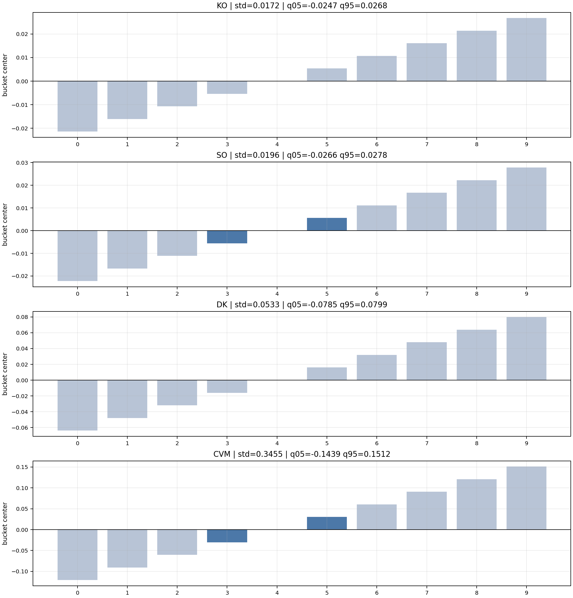
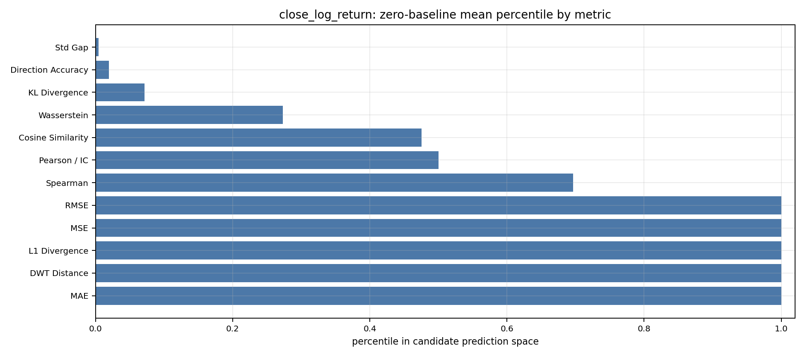
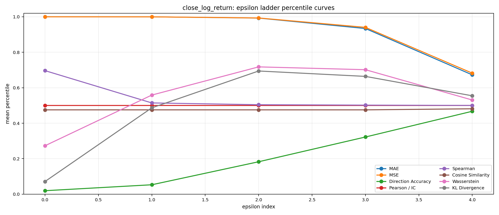
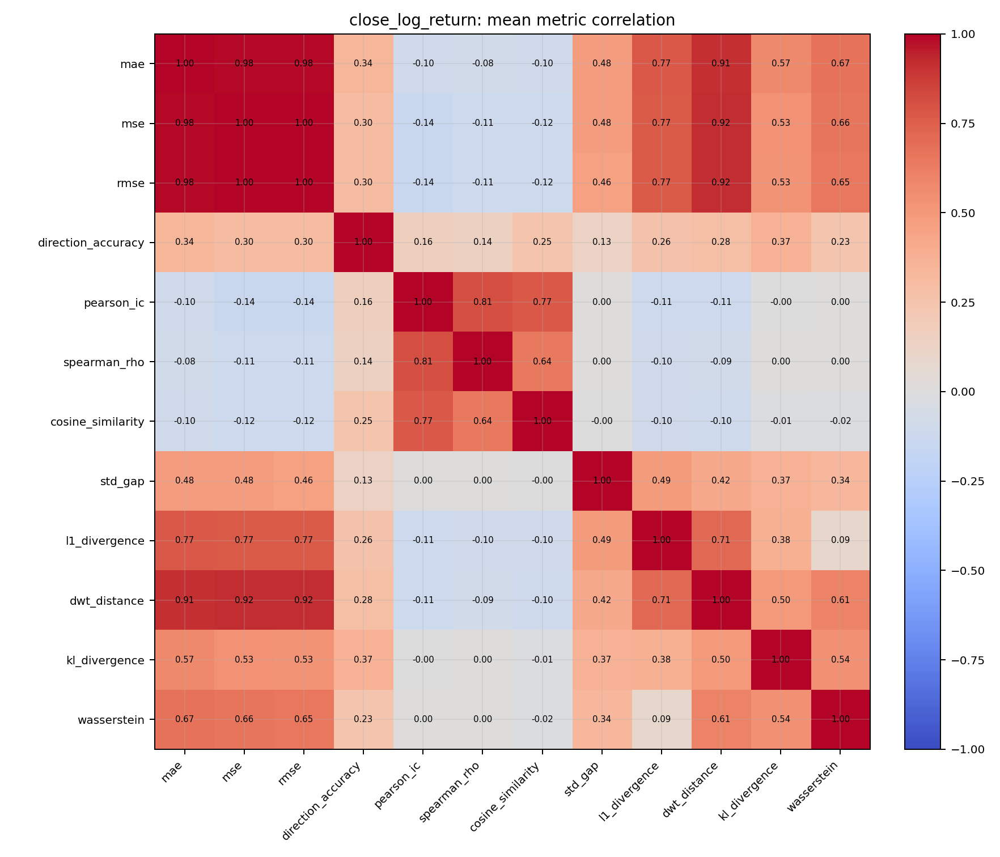
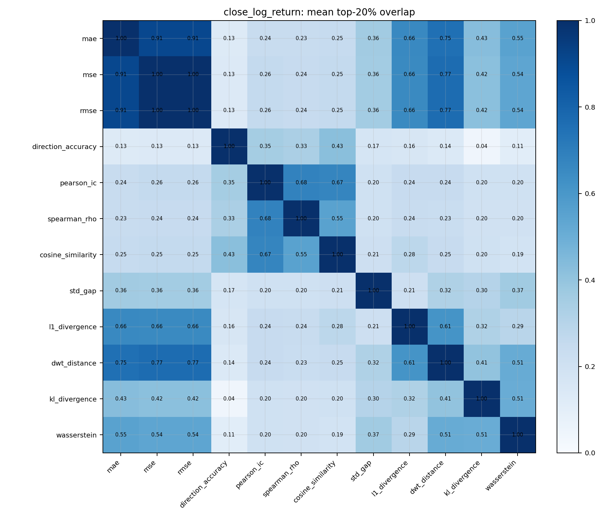
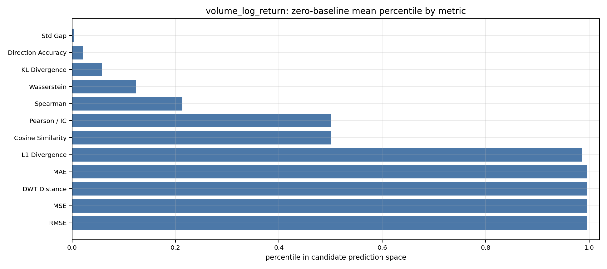
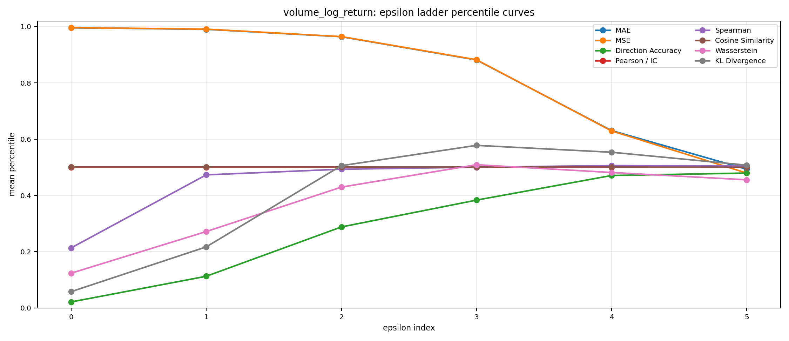
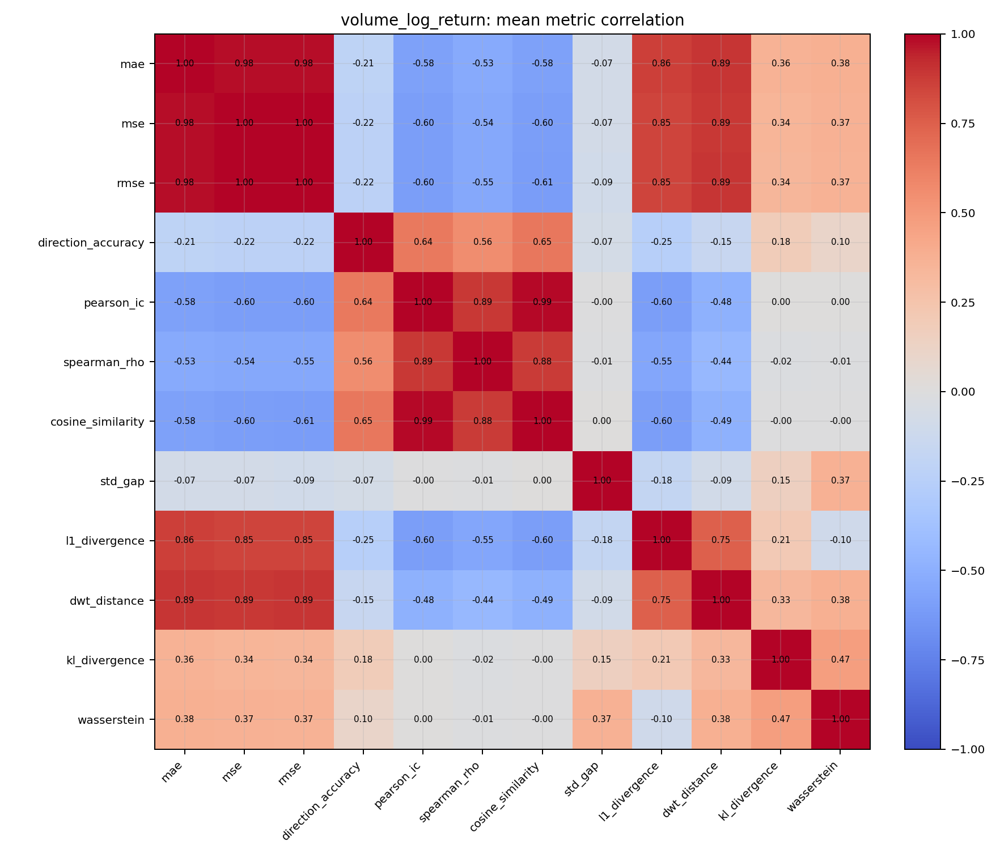
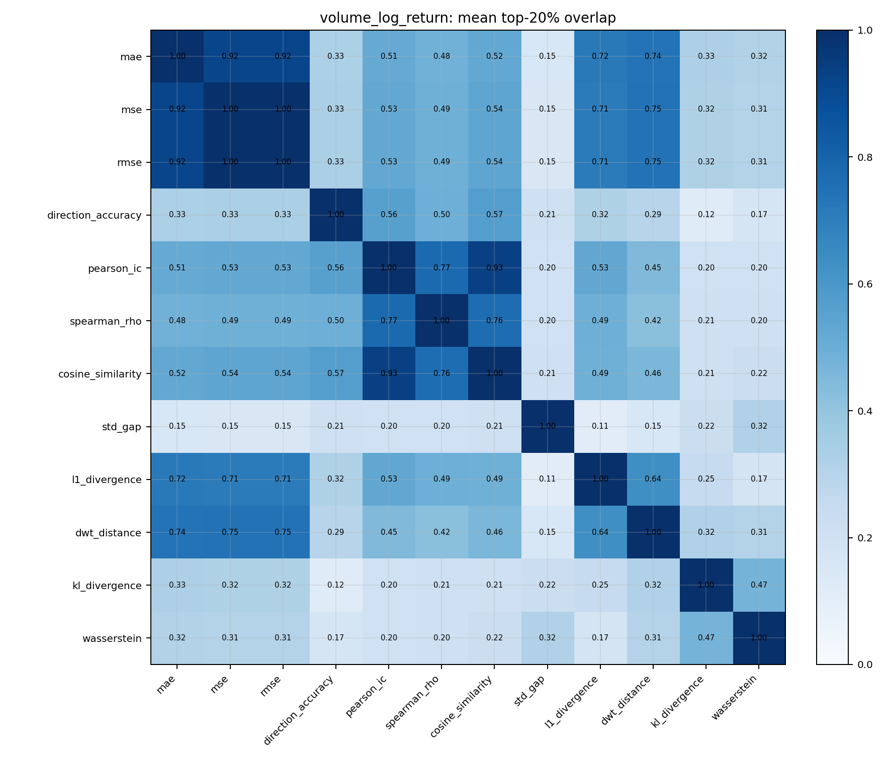

This report covers the full 1000 ticker q05/q95 experiment. Each ticker-target pair trims the value range to the historical 5th and 95th percentiles before constructing a zero-centered 11-bucket ladder. This checks whether the strong-zero-baseline story still survives after clipping out the most extreme tails.
| target | tickers | weekly windows | bucket count | max prediction count |
|---|---|---|---|---|
| close_log_return | 1000 | 169000 | 11 | 10000000 |
| volume_log_return | 1000 | 169000 | 11 | 19487171 |
1. Ticker-wise q05/q95 buckets. For each ticker, we aggregate hourly log returns into daily 7-step non-overlapping weekly windows. Then we estimate that ticker's own historical 5th and 95th percentiles and build a zero-centered 11-bucket ladder inside that trimmed interval.
2. Epsilon-baseline meaning. Epsilon-baseline comes directly from the bucket ladder. epsilon_index = 0 means only the zero bucket is allowed. Larger epsilon indices allow progressively wider zero-centered neighborhoods.
3. Case examples. The following cases show what ticker-wise q05/q95 bucket ladders look like for low, middle, and high volatility names in the full 1000-ticker run.
| symbol | daily std | q05 | q95 | # buckets | step |
|---|---|---|---|---|---|
| KO | 0.0172 | -0.0247 | 0.0268 | 10 | 0.0054 |
| SO | 0.0196 | -0.0266 | 0.0278 | 10 | 0.0056 |
| DK | 0.0533 | -0.0785 | 0.0799 | 10 | 0.0160 |
| CVM | 0.3455 | -0.1439 | 0.1512 | 10 | 0.0302 |

Each ticker uses its own q05/q95 range, then a zero-centered 11-bucket ladder clipped to that interval. The tables and charts below show whether trimming out the extreme tails changes the conclusion that near-zero forecasts dominate amplitude losses but not directional or correlational metrics.
Across the full 1000 ticker q05/q95 experiment, the zero bucket still dominates amplitude losses for close log return: MAE=1.0000, MSE=1.0000, RMSE=1.0000, and Wasserstein=0.2730 remain very strong. But Direction Accuracy=0.0195 stays weak and Pearson / IC=0.5000 stays neutral. Spearman=0.6964 and Cosine=0.4753 are materially higher than Pearson/IC, which suggests some rank or orientation structure survives without becoming useful signed forecasting skill.
Takeaway: even after clipping each ticker to its central q05/q95 body, near-zero forecasts remain extremely strong on amplitude-style losses for close returns. The metric mismatch persists at scale.
| epsilon_index | Cosine Similarity | DWT Distance | Direction Accuracy | KL Divergence | L1 Divergence | MAE | MSE | Pearson / IC | RMSE | Spearman | Std Gap | Wasserstein |
|---|---|---|---|---|---|---|---|---|---|---|---|---|
| 0 | 0.4753 | 1.0000 | 0.0195 | 0.0714 | 1.0000 | 1.0000 | 1.0000 | 0.5000 | 1.0000 | 0.6964 | 0.0043 | 0.2730 |
| 1 | 0.4753 | 0.9995 | 0.0530 | 0.4867 | 0.9990 | 0.9998 | 0.9998 | 0.5000 | 0.9998 | 0.5143 | 0.0217 | 0.5587 |
| 2 | 0.4753 | 0.9894 | 0.1827 | 0.6944 | 0.9810 | 0.9929 | 0.9934 | 0.5000 | 0.9935 | 0.5043 | 0.1225 | 0.7176 |
| 3 | 0.4753 | 0.9291 | 0.3222 | 0.6640 | 0.8988 | 0.9340 | 0.9404 | 0.5000 | 0.9418 | 0.5020 | 0.3460 | 0.7017 |
| 4 | 0.4813 | 0.6820 | 0.4673 | 0.5546 | 0.6385 | 0.6726 | 0.6822 | 0.5000 | 0.6907 | 0.5002 | 0.4606 | 0.5308 |




| metric | pct |
|---|---|
| MAE | 1.0000 |
| DWT Distance | 1.0000 |
| L1 Divergence | 1.0000 |
| MSE | 1.0000 |
| RMSE | 1.0000 |
| Spearman | 0.6964 |
| Pearson / IC | 0.5000 |
| Cosine Similarity | 0.4753 |
| Wasserstein | 0.2730 |
| KL Divergence | 0.0714 |
| Direction Accuracy | 0.0195 |
| Std Gap | 0.0043 |
Each ticker uses its own q05/q95 range, then a zero-centered 11-bucket ladder clipped to that interval. The tables and charts below show whether trimming out the extreme tails changes the conclusion that near-zero forecasts dominate amplitude losses but not directional or correlational metrics.
Across the full 1000 ticker q05/q95 experiment, the zero bucket remains strong on amplitude losses for volume log return, but the dominance is softer than for close. MAE=0.9960, MSE=0.9965, and RMSE=0.9965 stay high, while Wasserstein=0.1235, Std Gap=0.0036, and KL=0.0579 are less extreme. Direction Accuracy=0.0213 remains weak and Pearson / IC=0.5000 remains neutral.
Takeaway: trimming to q05/q95 weakens the extreme-zero picture for volume more than for close, but it still does not make directional or correlation metrics align with amplitude-style objectives.
| epsilon_index | Cosine Similarity | DWT Distance | Direction Accuracy | KL Divergence | L1 Divergence | MAE | MSE | Pearson / IC | RMSE | Spearman | Std Gap | Wasserstein |
|---|---|---|---|---|---|---|---|---|---|---|---|---|
| 0 | 0.5007 | 0.9962 | 0.0213 | 0.0579 | 0.9872 | 0.9960 | 0.9965 | 0.5000 | 0.9965 | 0.2135 | 0.0036 | 0.1235 |
| 1 | 0.5007 | 0.9905 | 0.1126 | 0.2171 | 0.9754 | 0.9904 | 0.9911 | 0.5000 | 0.9913 | 0.4732 | 0.0106 | 0.2716 |
| 2 | 0.5007 | 0.9628 | 0.2879 | 0.5057 | 0.9323 | 0.9640 | 0.9645 | 0.5000 | 0.9658 | 0.4932 | 0.0398 | 0.4295 |
| 3 | 0.5007 | 0.8817 | 0.3833 | 0.5779 | 0.8341 | 0.8816 | 0.8824 | 0.5000 | 0.8870 | 0.5003 | 0.1304 | 0.5090 |
| 4 | 0.5007 | 0.6420 | 0.4708 | 0.5535 | 0.5935 | 0.6304 | 0.6293 | 0.5000 | 0.6424 | 0.5062 | 0.3094 | 0.4815 |
| 5 | 0.5000 | 0.5096 | 0.4795 | 0.5076 | 0.4900 | 0.4931 | 0.4794 | 0.5000 | 0.5035 | 0.5047 | 0.4295 | 0.4555 |




| metric | pct |
|---|---|
| RMSE | 0.9965 |
| MSE | 0.9965 |
| DWT Distance | 0.9962 |
| MAE | 0.9960 |
| L1 Divergence | 0.9872 |
| Cosine Similarity | 0.5007 |
| Pearson / IC | 0.5000 |
| Spearman | 0.2135 |
| Wasserstein | 0.1235 |
| KL Divergence | 0.0579 |
| Direction Accuracy | 0.0213 |
| Std Gap | 0.0036 |